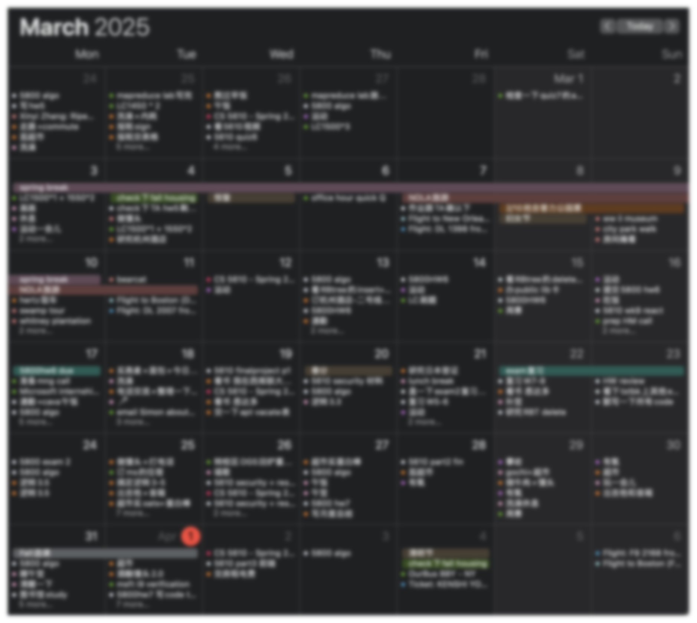

近况乱报 · 三月刊
三月在干啥
为了不忘记平淡的日复一日里都在干些什么，二月三月姑且恢复了记录日程的习惯。
——然后发现并没有什么生活里程碑，大多是想着“明天一定”的稀疏平常的日子。
月初春假逃离波屯的冬天，去了新奥尔良玩，说是气分转换，其实本来也没在焦灼的状态。最值得一提的是新奥尔良的爵士氛围。尽管已经不再有种植园那样实际的奴隶制，还是可以在波本街上看到人们用日日夜夜的爵士表演和游行挣脱名为现代性的桎梏。
还记得那里随机出现的阴雨气候让人想起久别的梅雨季生活，过惯了被暴雪和零下十几度严寒软禁在家的生活，连潮湿低气压的雨天都显得眉清目秀。
关于美食，美国南部的cajun菜式口味偏重，很符合中国人的口味，比如蒜香黄油小龙虾真的很好吃，在我心目中甚至超越了十三香；炭烤生蚝也很绝，我是从来咽不下生蚝的人，但吃起chargrilled oyster就像吃萨莉亚的烤蜗牛一样简单；gumbo像是速食海鲜粥，我和朋友也都还挺喜欢。临走前吃了一家叫Bearcat的招牌可爱的brunch店，虽然有很多本地人和xhs网友推荐，但我没觉得它有特别惊艳，感觉像是上海会出现随即消失的网红店。
近期的打算
个人pj方面，一直想趁热情还没有完全消耗殆尽时写点nbn术专和夜鹿几个概念专的梳理，作为对逝去的青春的收尾（。）等到近期把学业上几个大任务了结了可能会花个几天完成。虽然不擅长文艺批评，但是对文献综述还是有点自信的。
写于4/1
最后修改于 2025-03-31